The Onsight Walk Off
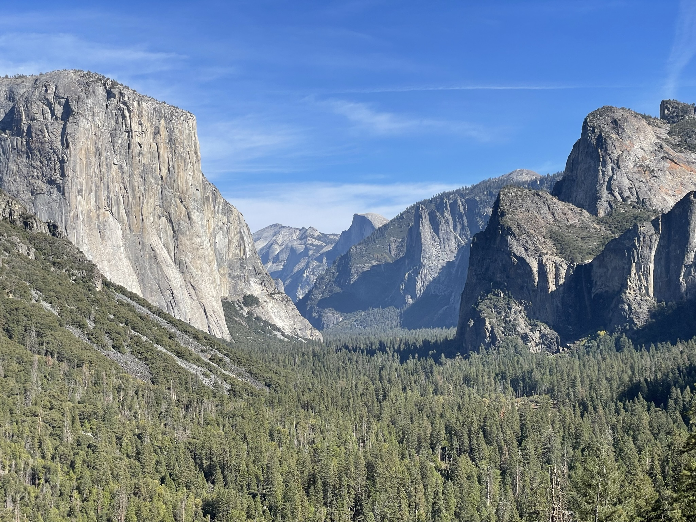
What is an onsight in rock climbing? Google says it is: “An onsight is when a climber successfully completes a route from bottom to top on their very first attempt, cleanly (no falling or resting on the rope), with zero prior knowledge or advice about the climb.” Widely considered the purest and most challenging style of ascent in rock climbing, an onsight requires the climber to rely entirely on their own intuition, ability to read the rock, and real-time improvisation. So basically, no beta and just trying it. This can be applied to all sorts of things. Like an onsight all-you-can-eat buffet with a linear line where you have to choose what to fill your plate up with without knowing what lies ahead.
In 2022, my friend Grahm invited me to join him on a trip to Yosemite Valley for some rock climbing. My wife and I had been before and I really enjoyed it, plus Grahm is the coolest person, so I said yes very quickly. We flew into Fresno and made the drive north to the valley. What beauty lies in the mountain valleys here. The sun was setting as we pulled into the park, and we did not have reservations for Camp 4 until the next night. No problem, right? You can sleep in the park if you are on route. I told Grahm I knew of an easy climb that was roughly three pitches with a ledge at the top where we could bivy for the night. He didn't hesitate and agreed quickly. The route was 5.6 and consisted of polished granite toward the bottom, which would prove to still be the crux.
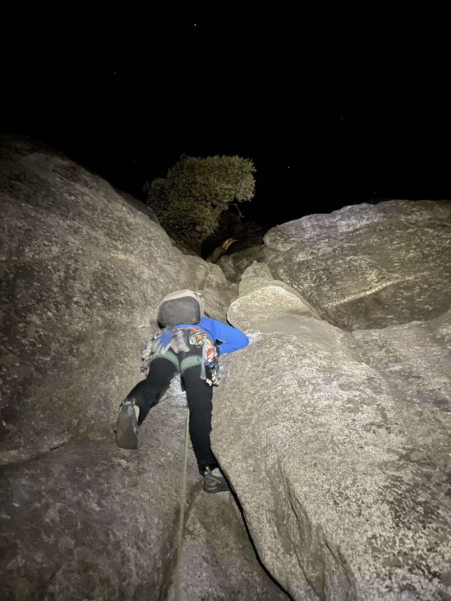
We climbed it in the night via headlamps, and I had in tow my Pokémon backpack. I don't believe we took much in the way of creature comforts.
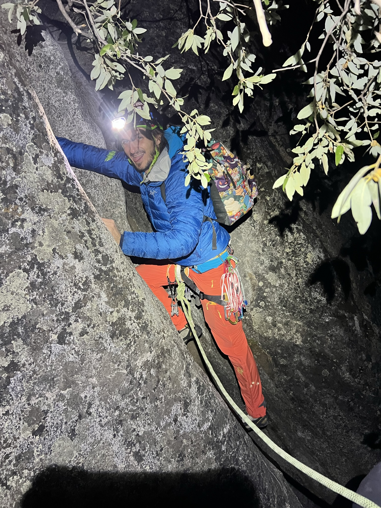
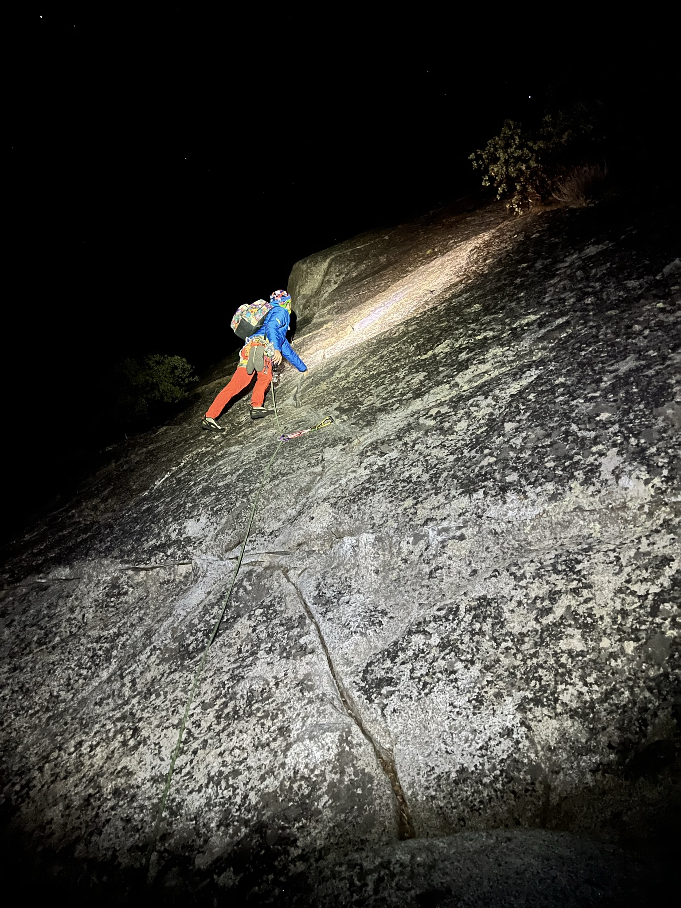
We made quick work of the trip and found ourselves at a very spacious ledge to make our slumber time arrangements. I tied directly into a large boulder, as did Grahm. The night was beautiful, and we watched various headlamps moving around up on El Cap, a wall Grahm would later conquer and solidify himself as one of Oklahoma's greatest of all time.
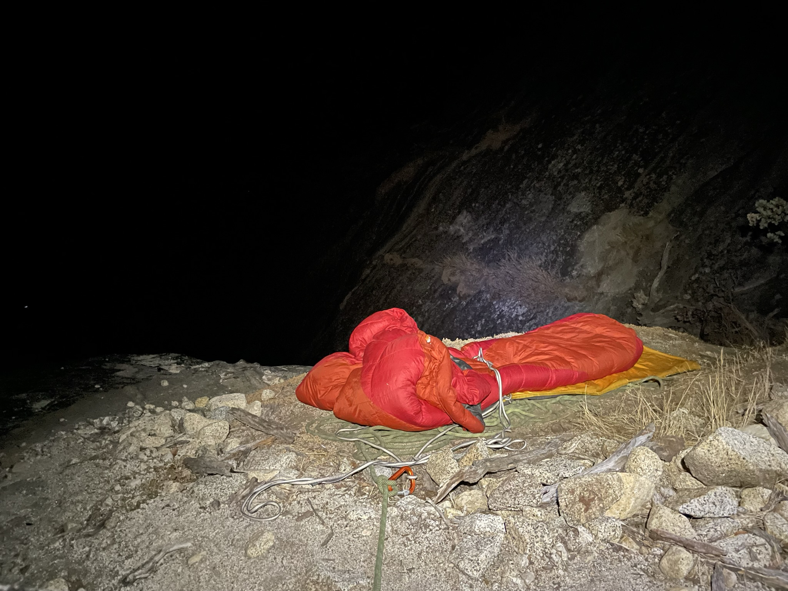
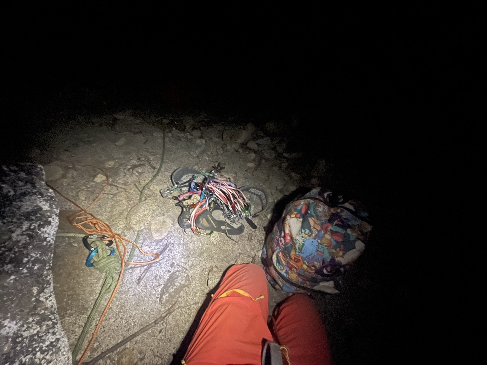
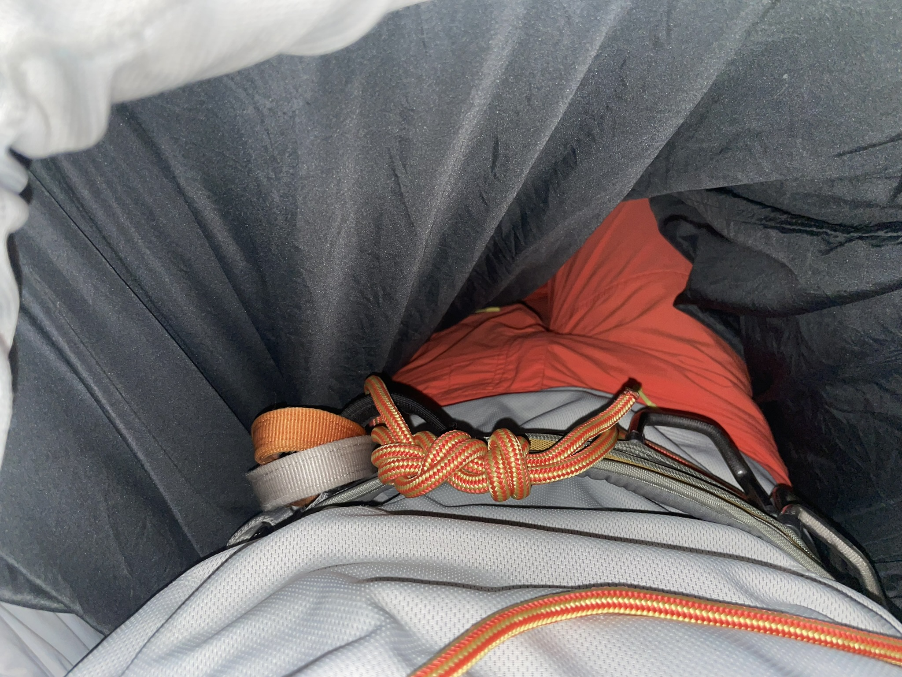
The next day we attempted the Royal Arches route, which I believe is around 5.7 A0 or 5.10 if you pull off the free sequence near one of the upper traverse pitches.
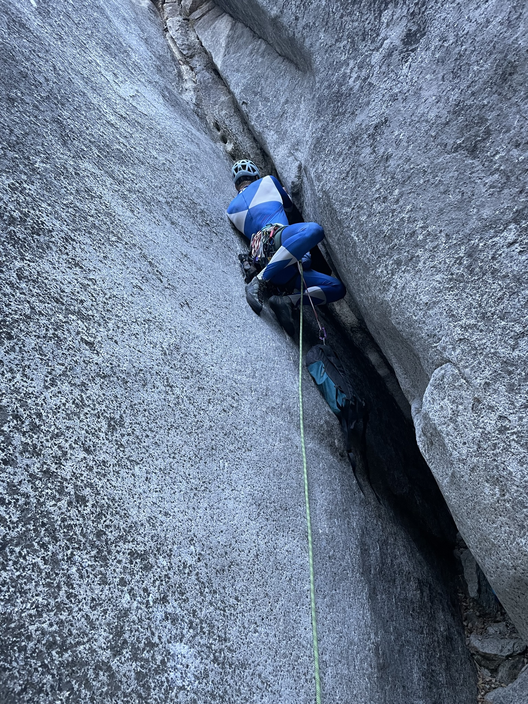
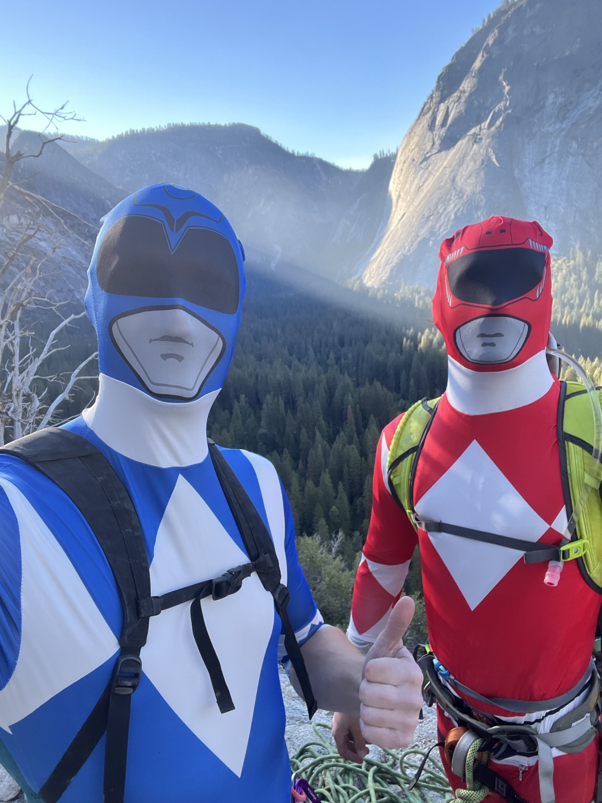
Neither of us read up on the descent, but we knew it was a dicey walk-off if you didn't know the beta, and the cliffs had been known to take many lives. The rappel option sounded like the best bet for us. We switched leads the entire route while giving Grahm the splitter hand crack pitch he so desperately wanted. I don't think he even placed a cam the entire crack. It was so good.
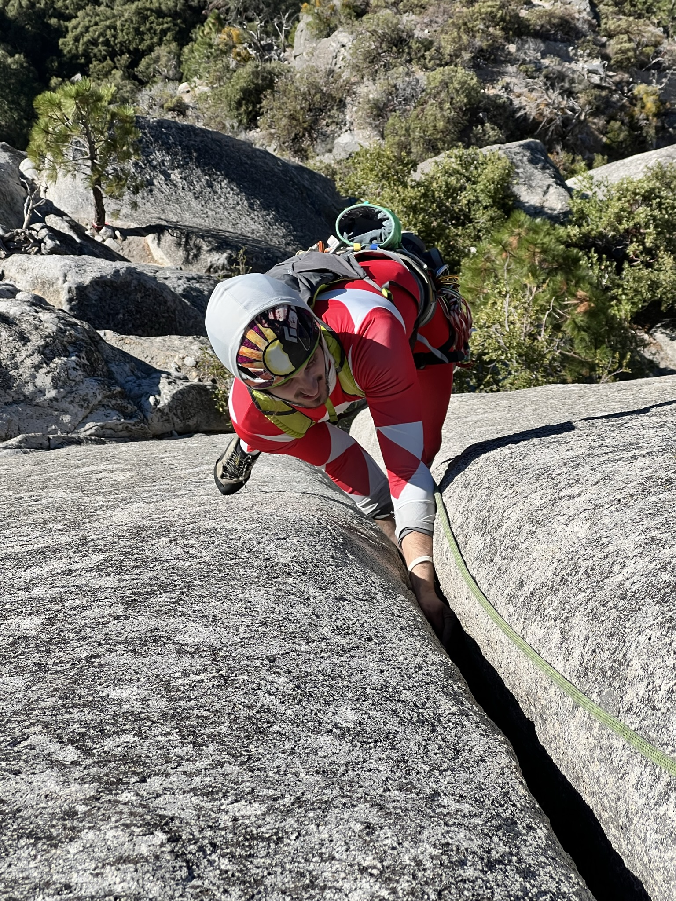
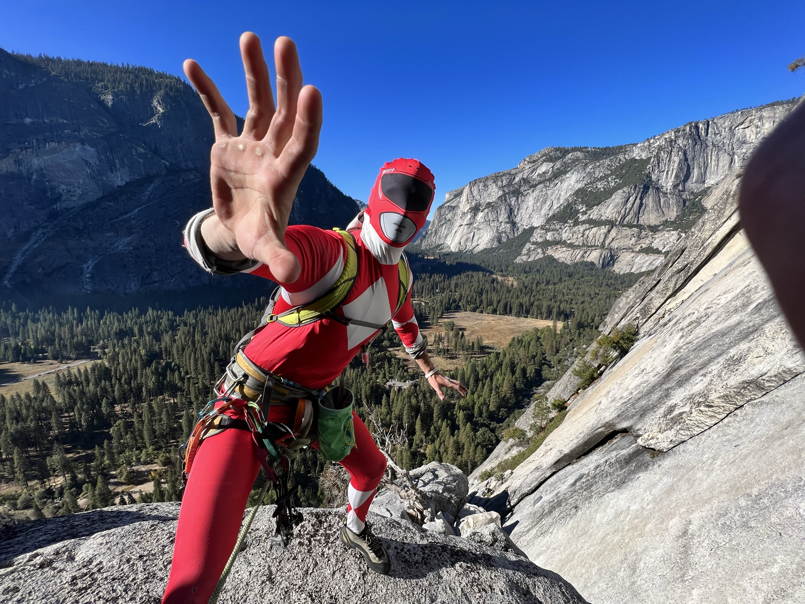
Did I mention to you that this was on Halloween? The day before, when we arrived into the valley, we had dressed up in morph suits to be Power Rangers. Myself, the Red Ranger, and he was the Blue Ranger. We kept that up as we were now climbing the Royal Arches route in our morph suits! How fun.

I had a seamstress put in a zipper on mine for seven dollars so I could water some of the plants as needed. Grahm did not. He opted for a knife and an on-route spectacle of slicing the suit to alleviate the call of the wild. Pure genius in my opinion. He has a carefree spirit that is so intoxicating. He inspires me more than he knows. As we climbed, we did free the A0 section for a nice three-move 5.10. I'll take it. A few pitches further, he leads a 5.7 that I follow off of a ledge. To put this into perspective for my ability, if the hardest climb I have ever done was a marathon, this pitch is like walking to the mailbox.
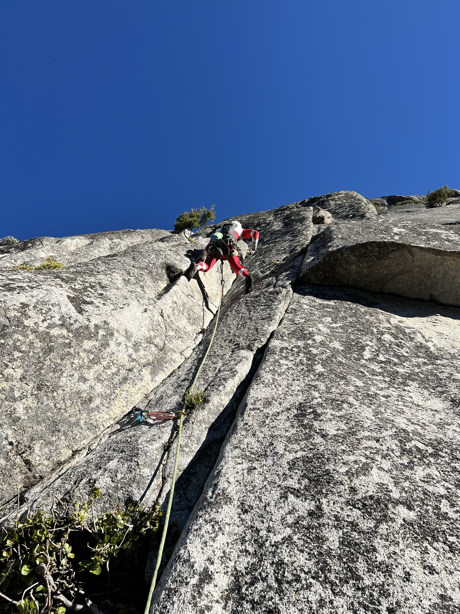
I pull on and get a left-hand finger lock to remove a cam he had placed. My foot has some rock and sand pebbles from the ledge and pops out. Everything leaves the wall and the security of the crack except my left-hand finger lock. My shoulder rotates, and I feel my shoulder separate from my body. A dislocated shoulder, a thousand feet off the ground. I do my best to backtrack the movement and let the arm go back naturally while still in the finger lock. As I continue to climb, my eyes watered with pain and the adrenaline faded. I speak to Grahm at the belay ledge and let him know what had happened. He offers to lead the rest, and I tell him I can take the next pitch. It was a mistake.
For the next few hours, my shoulder is in a lot of pain, and yet we still make it to the last pitch.
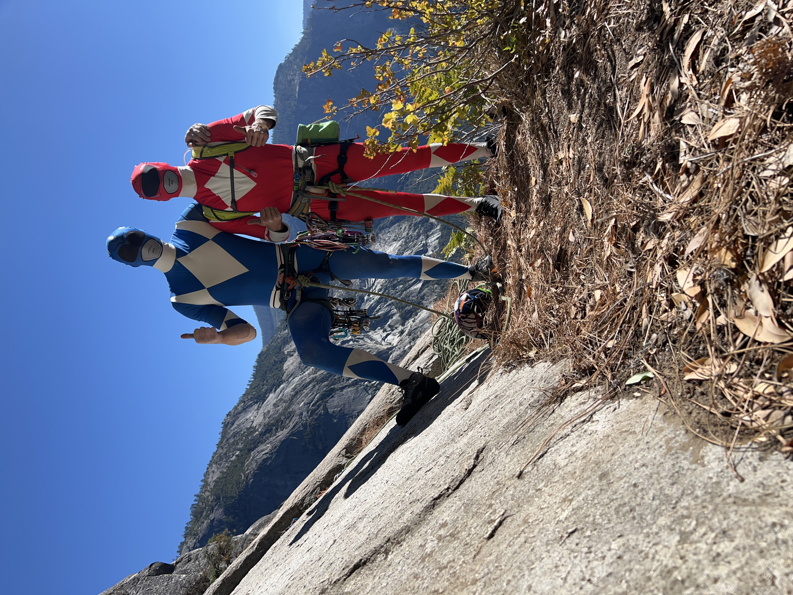
Here I was a little worried about rapping down because of my shoulder, and the thought of pulling ropes for a couple of hours didn't seem to be worth it. For whatever reason, Grahm obliged me and sent the last pitch and got ready for the walk-off. We were just about out of water as we made our descent down. Mind you, the descent we knew was a bit grueling, especially as the sun was going down on us. In mountaineering or rock climbing specifically, 30–70% of all accidents and fatalities happen on the descent. This includes walk-offs and rappelling off. The North Dome Gully is notoriously dangerous and has held many accidents and fatalities. It is a steep Class 3/Class 4 route where some unroped climbing is required. Getting off route in the North Dome Gully easily channels climbers into steep, loose choss. It has many dead ends that terminate at massive cliffs. Attempting to downclimb these spots is what has led to the fatalities. Nighttime adds another layer of difficulty to an already dangerous descent.
Both options can be dangerous. Rappelling has its own risks, while the walk-off needs a steady head and feet under high exposure where a mistake can lead to death. We start off on the walk-off with our phones dangerously low on battery to pair nicely with our lack of water. We make a plan and let each other know that if one person vetoes continuing, we will always go up higher and reassess. We sometimes spent 20 minutes following a trail we knew for sure was correct, only to be cliffed out again and again. By that time, my phone was dead and Grahm's had very little battery left. He pulled up beta for the descent, which the Google result is all we read before his phone died. “The ‘walk-off’ descent from Royal Arches goes through North Dome Gully (NDG), which is notoriously hazardous and historically accounts for many severe accidents and fatalities.” That's what we read.
I couldn't help but think in the moment this would be a long night, and Grahm kept saying, “YOSAR is going to find us in these ridiculous Power Ranger outfits.” We kept going, always paying attention to the trail branches and somehow following the main trail even after losing it and finding ourselves tired, thirsty, and wanting to be back at camp. Correct decisions the entire evening finally led us to the correct gully trail, and we saw another group of hikers. We had made it! When we strolled into the valley floor, we saw a family of bears as the sun was setting behind the massive valley walls.
We went straight to the pub and ordered a beer, where we found a friend. He was a true wild spirit. He had beta on the entire valley, and especially how to make the most of our night. So we bought him a beer, and he joined us at the table. We left with him to go check out his car-camping setup, which was not allowed in the valley, but he said you just have to be quiet and still and stay covered, and they will go away after banging on your window for an hour. Then he said, “You guys look like you need to have a nice warm shower.” He walked us into the resort, and as we walked around, he went up to the workers and said, “We don't have towels in our room. Can you get us some fresh ones?” A few people didn't buy it, but we finally received two towels. He said, “Enjoy, fellas,” as he gave us some stove fuel and disappeared into the forest trail back to his car.
Grahm and I snuck into the showers with a map we had found in the trash with the code written on it in ink pen. What a shower! A little bit of booze remained in our system as we each enjoyed a long shower.
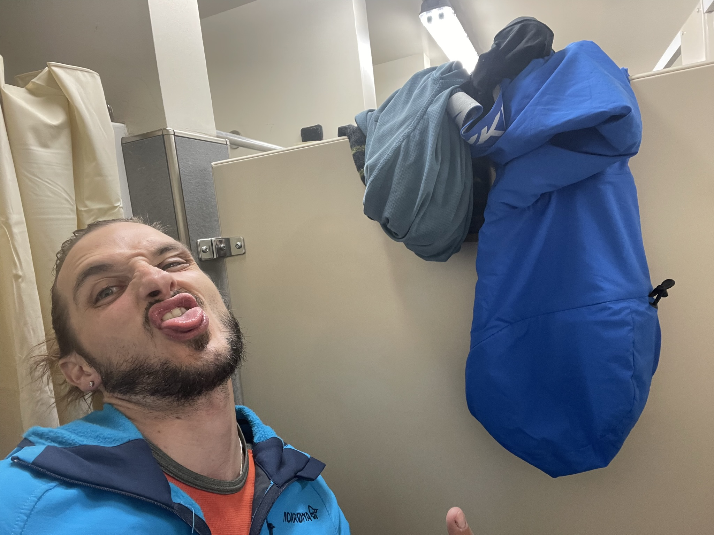
What fun. As we dried off and walked back to our camp, I said, “Wow, what an onsight today! Ha! An onsight walk-off!” I say this saying a lot these days. Partially to keep the memories alive of a grueling adventure with an epic feel. For years after, my shoulder did the job well of reminding me.
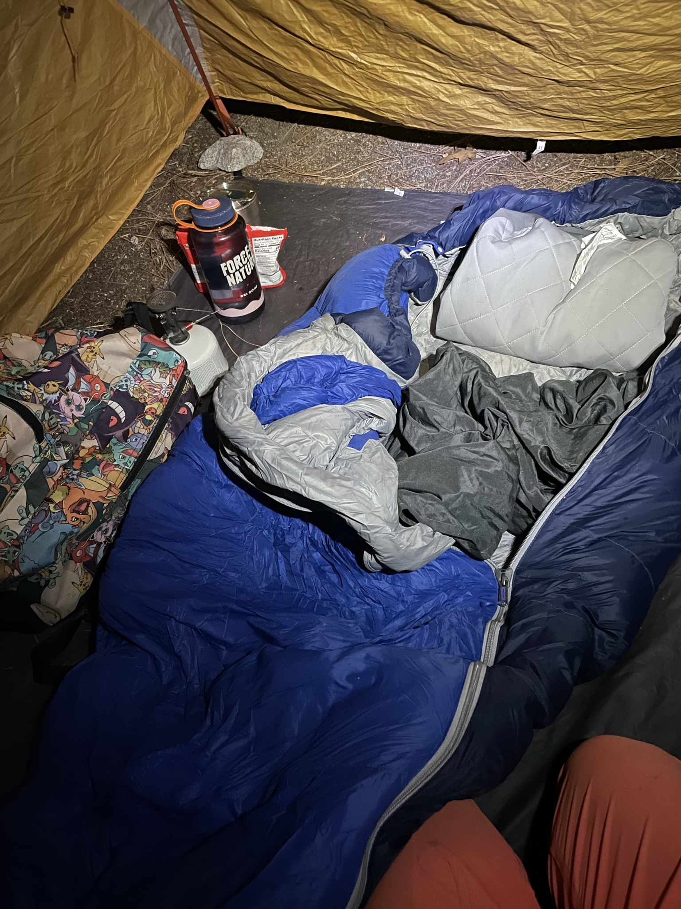
Have you ever experienced something similar? Something unknown in your life? Perhaps a fork in the road where you make a blind decision. Perhaps it's a decision well thought out. The onsight walk-off is something everyone will face in their life. A good example of this is my friend. We will call her Sparrow. She had a bad divorce and was looking for the next chapter in her life. She chose to buy a house with a pool and enjoy her time soaking in the sun and living the dream. This was the metaphorical start of her path toward a walk-off that was unfamiliar to her.
Over the years, the house had problems, costs came up, and she found herself feeling an overwhelming sense of pressure and anxiety. Maybe you have felt this too with something in your life. She thought, maybe I should sell and take the loss and start a new path toward a smaller house or a rental, something that would alleviate this huge burden of debt and rising insurance and repair costs, all while doing it alone without a partner to help. Then the doubt set in. Why sell now and lose all that time and energy that you spent on the house? Just ride it out and keep going was the thought. This is an option, but going against that voice in your gut trying to keep you alive or above water can be screaming at you to turn around because you have cliffed out. Don't try to keep downclimbing this way. I'm very excited to say that Sparrow has turned around and ignored the sunk cost of time and energy in the pursuit of the best path for her to get down safely from that mountain that is life. She has a condo now and sold her house, which she did get equity from. I hope this path brings her great joy and relief!
Another good comparison I can think of is another friend close to my heart and my wife's best friend. Chelsea has been in our life since I was about 15 or 16 and has always been the epitome of adventure and living her life. She had an idea to live in a van for a while and told a lot of people about her dream. Even her dad helped give his time and resources into this. I remember getting the privilege to help her install her electrical solar panels and battery bank, hooking up her water pump, and watching her drive off to her first adventure. As time went on, she thought perhaps it wasn't quite as glamorous as she first thought, and the same feeling came to her as Sparrow. She felt like she had to continue on that path because of the time and energy not only she, but her family and friends, had spent helping make this dream a reality.
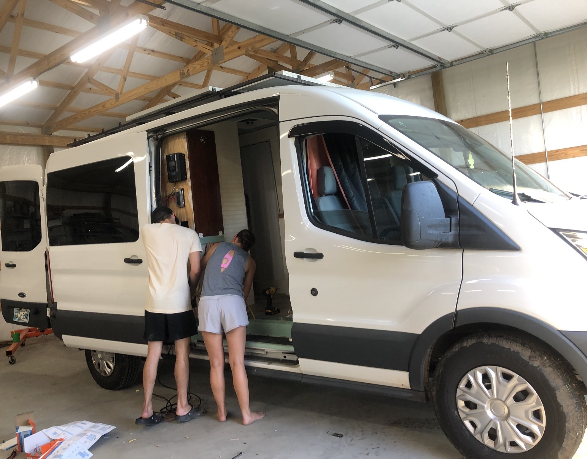
Again, I am happy to say she turned around, climbed up, and found a new trail. Her main trail that kept her safe on her very own onsight walk-off. We all have it, and we all will go through it at some point. The best advice is: keep your ears open, listen, and seek feedback from your friends and partners. Always have a plan, if possible, to reassess and weigh the risks and rewards of continuing forward versus taking the perceived loss, turning around, and staying alive.
It's okay to set your goals on something large, say a mountain summit or living in a van, but know that the ultimate value doesn't lie within the objective. It lies in the journey. I know it sounds cliché, but it needs to be repeated. It's okay to enjoy a chapter in life without reaching the summit. It's okay to turn around. And it's okay for you to reassess and make changes to your life that will increase your happiness, well-being, and your time.
So, good luck and be prepared for your own onsight walk-off. Until next time.
← back to blog